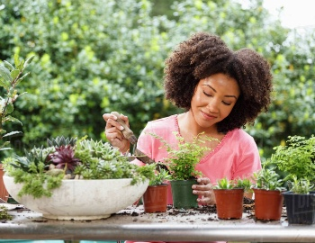

Audience
Target Audience
The target audience for my site are farmers and gardeners looking to take care of their plants or crops.
Personas
Persona 1
Thomas is a local potato farmer in Rexburg, ID. He isnt too tech savy but has been looking for a good website or app that can help him know what to do with his land and plants as well as to know basic weather information for his day to day.
Persona 2
Susan loves gardening. She plants everything from sunflowers to tomatoes to bell peppers. Her small home in Eugene Oregon is far from family so she treats her plants almost like siblings or neices and nephews. Susan wants a website to tell her when to take care of which plants: when to cover what, when to prep for a heat wave, etc.
Scenarios
- checking the weather daily to know what to wear
- checking for overnight frosts to know if plants should be covered
- check for how much rain has been seen over the last few weeks and how much to expect in the coming weeks
- check for trending temperatures up or down to help predict good time frames for working
- check wind trends to predict if plants need extra stakes/support to keep them upright